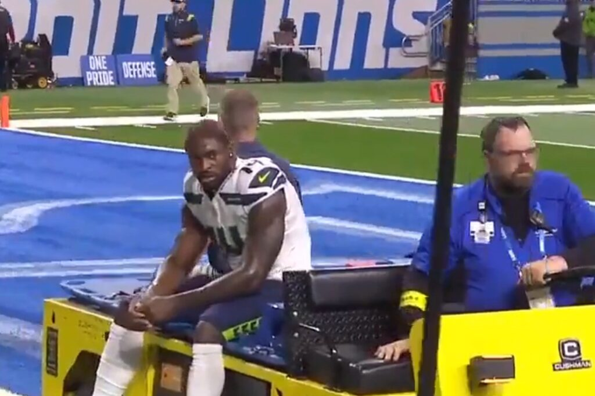
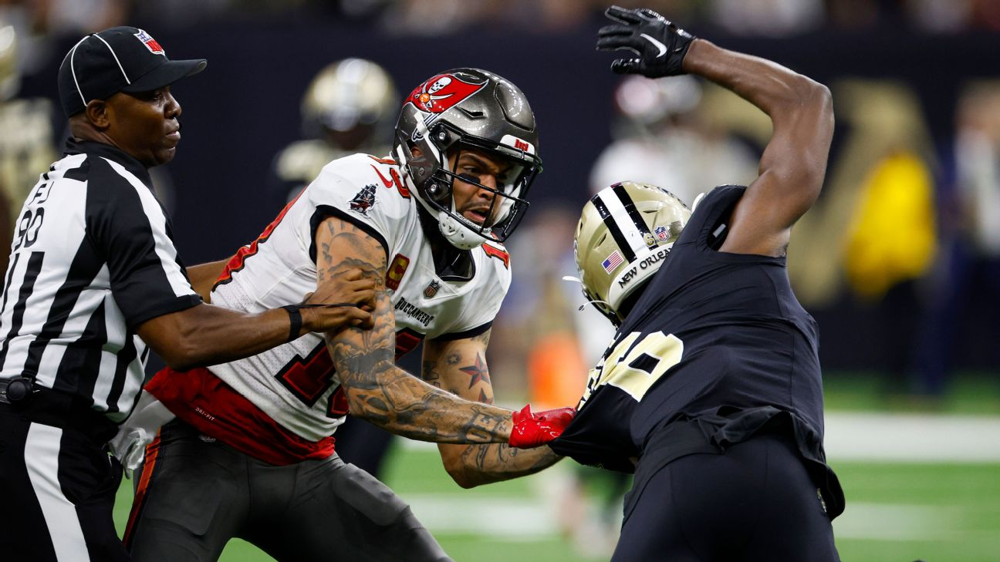
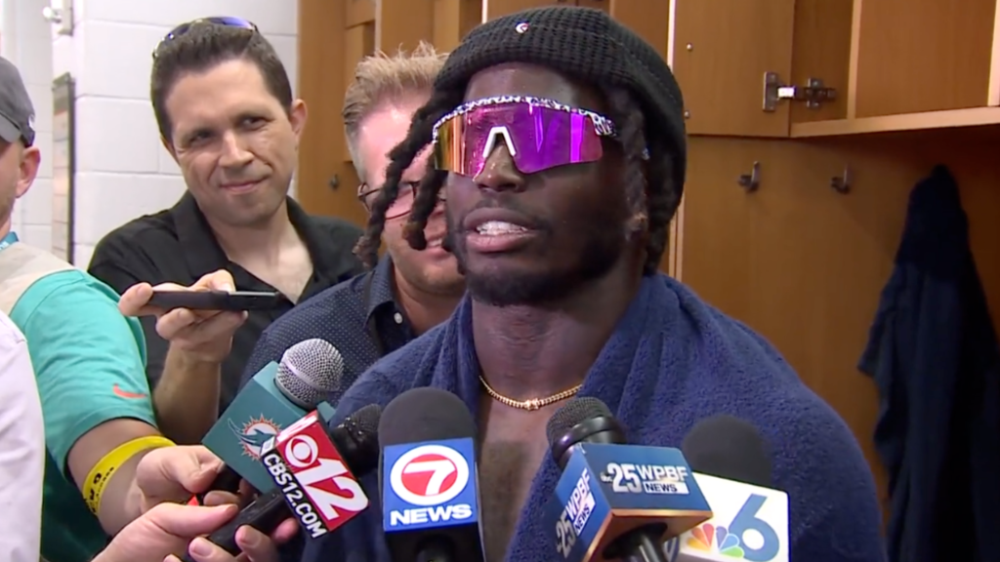
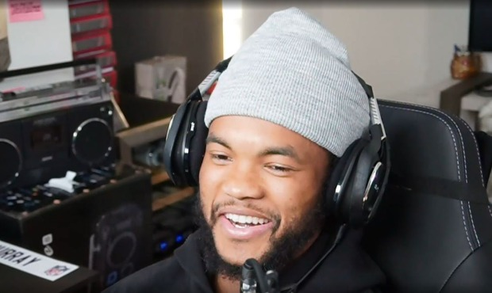
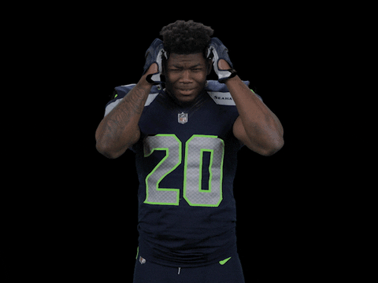
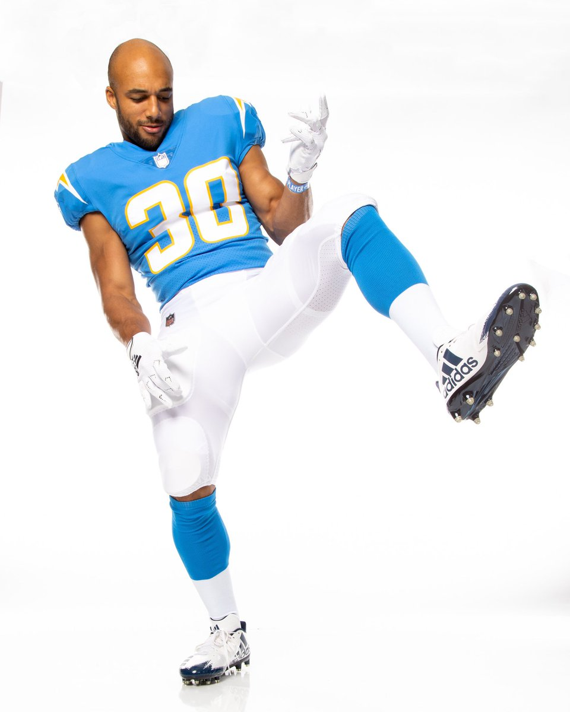

Two special guests are bringing you the Power Rankings this week - PJ and Joel. We did them from the heart so you will see a lot of movement and hot takes - which is probably why Snake is never going to ask us to do this again. To get started, It was a HUGE week for Kris who got a whole new team and ended up being the highest scorer for the week. Also, PangREEE took his first L of the season.
Matchup of the Week: We got 3-1 Wheelin & Thielen versus 3-1 Jus-Jonzin-4-Herb. Huge matchup as two of the three 3-1 teams go head-to-head. Is CJ going to continue his upset win streak?
Waiver Wire Wizard: We have to go with Jamaal Williams and Andy who spent big at $29 which was enough to outbid 5 other people. With Swift not practicing today, the $29 is quickly paying off.
1. Sweet Brotha Numpsay (3-1)
Although Pangy took his first loss of the year, he was still able to amass 133.38 points and remains the top scorer in the league. No surprise he stays at number one. The only person on his team to take a shit was DK Metcalf.

2. Jus-Jonzin-4-Herb (3-1) ⬆️
Evans misses a game because of his suspension but picks up where he left off with 30.30 points. Andy made some moves in trading for Kelce and spent big on Williams, however, Patterson is now on IR and he traded his 4th round pick for a kicker and a bag of chips.

3. The Hurts Locker (2-2) ⬆️
Joel comes up with a much needed win to move up a spot. There are a lot of questions on this team still. Is Hill really QB proof? How is Joel’s blood pressure holding up while reading the three daily notifications of CMC injury reports? Is Conner really washed? When do you start Pickens? When do you drop Akers?

4. Wheelin & Thielen (3-1) ⬆️
Chris comes out with a win but we don’t know if you can feel good about beating someone who scores 71 points. He continues to hold the lowest scoring spot tied with the best record in the league. That will not be sustainable. Taylor is looking a bit worrisome, not only has the #2 overall pick been lackluster, but he is now on the injury report. With a short week ahead he is going to be out (should have traded him to Joel for Tyreek Hill). With his main QB in the middle of a divorce, is Chris having a mid-sesaon-life-crisis yet?
5. Can you Diggs it? (2-2) ⬇️
In possibly the biggest overreaction of the week, Tony drops to 5. However, he only scored 71.38 points this week as his whole team looked like what came out of DK’s butt when he was carted off. Kyler Murray gets back to himself after the Call of Duty Modern Warfare 2 open beta comes to an end. However, we wouldn’t be surprised if Tony tries to move on from Murray as the new Call of Duty game and double XP Mountain Dew caps drop at the end of the month.

6. 8==D (2-2) ⬆️
PJ adds another inch after getting a whole new team from Kris, knocking off the undefeated PangREEE, and scoring a big 142.54 points. Is anyone really surprised though? PJ always seems to turn it around this time of year. With Penny leading his backfield, and his bench having the most points on it, PJ could be looking to add many more inches in the cumming weeks.

7. One Snake One Kupp (2-2) ⬇️
Well… what to say here. Not sure what happened to this team. Trades away Hock for Pitts. Hock pops off and now Pitts is on the injury report. Swift is looking to miss more time. With Williams looking so good, we don’t see Detroit rushing Swift back to the field. Can Barkley’s knees hold up all year to prop this team up while Snake figures it out? At least he still has his one Kupp.
8. HOLLYWOOD BROWNS (1-3) ⬆️
Coming in HOT with the 173.96 points and sets the record for the highest scoring week for the league. Kris’ team exploded for a much needed big W. The activity in the trading room and the big scores are enough to pull him from the pooper this week. We will see how he fucks this up going forward.
9. Show me the mooney (1-3) ⬇️
Seif loses a close matchup and tumbles down the power rankings. He left a lot of points on his bench last week and trusted the Rams defense against the Niners. With Dobbins back in the mix he puts his sole Chicago Bear on the bench where he belongs. Maybe he should ask the person who drafted his team to help him manage it - because he sucks at it. He also doesn’t read these.

💩 Unpaid Bills (1-3) ⬇️
Well, well, well… Look who has to take the butt plug out now! Neil is officially cursed when it comes to RB keepers. Two RBs blew out their entire knee after being kept by Neil? Coincidence? We think not. Neil better hope to get something going and quick as 1-3 is not looking too stong right now. We think he would look great in a singlet singing the National Anthem though.
Good luck everyone, besides Kris and Neil - PJ and Joel 💋
“I feel like I am the best, but you are not going to get me to say that.” - Jerry Rice